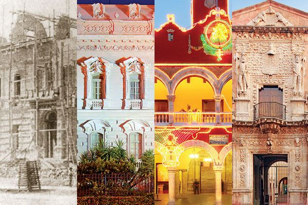

Mucho antes de la llegada de los españoles, el territorio que hoy ocupa el Centro Histórico de Mérida fue un importante asentamiento maya conocido como Ichcaanziho (que significa "cinco cerros") y posteriormente llamado T'Hó o Jo'. Era una ciudad ceremonial habitada con una densa red de señoríos que resistirían fuertemente la conquista.
Debido a la feroz resistencia maya, la conquista de la península fue un proceso excepcionalmente largo. El 6 de enero de 1542, el conquistador español Francisco de Montejo "El Mozo" fundó formalmente la ciudad sobre las ruinas de T'Hó bautizandolo como "Mérida" porque las ruinas y basamentos piramidales mayas le recordaron a las edificaciones y ruinas romanas de la ciudad de Mérida en Extremadura, España.
Durante la colonia, Mérida se consolidó como el centro político y religioso de Yucatán, dependiendo primero de la Audiencia de Guatemala y más tarde de la de México. Es en esta época cuando se le comienza a conocer como la "Ciudad Blanca". Existen dos teorías sobre este apodo: la primera sugiere una connotación social (designada para españoles "blancos" en contraste con los pueblos indígenas) y la segunda, una razón estética, ya que las casas y edificios eran pintados y encalados de blanco.
Debido a la feroz resistencia maya, la conquista de la península fue un proceso excepcionalmente largo. El 6 de enero de 1542, el conquistador español Francisco de Montejo "El Mozo" fundó formalmente la ciudad sobre las ruinas de T'Hó bautizandolo como "Mérida" porque las ruinas y basamentos piramidales mayas le recordaron a las edificaciones y ruinas romanas de la ciudad de Mérida en Extremadura, España.
Durante la colonia, Mérida se consolidó como el centro político y religioso de Yucatán, dependiendo primero de la Audiencia de Guatemala y más tarde de la de México. Es en esta época cuando se le comienza a conocer como la "Ciudad Blanca". Existen dos teorías sobre este apodo: la primera sugiere una connotación social (designada para españoles "blancos" en contraste con los pueblos indígenas) y la segunda, una razón estética, ya que las casas y edificios eran pintados y encalados de blanco.